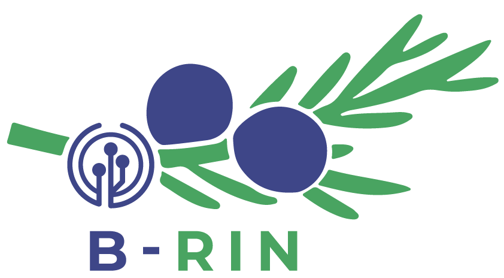

Projekt
B-RIN
Projekt povezuje vrtce in osnovne šole ter razvija učne scenarije, katalog temeljnih vsebin RIN in didaktična priporočila za najmlajše učeče se.

O projektu
Podrobnejši opis
B-RIN je usmerjen v eksperimentalni načrt uvajanja, implementacije in evalvacije temeljnih vsebin računalništva in informatike v predšolsko vzgojo ter v osnovno šolo do vključno 5. razreda. Projekt poudarja razvojno-psihološko kontinuiteto med vrtcem in osnovno šolo ter prilagajanje didaktičnih strategij različnim obdobjem zgodnjega in srednjega otroštva.
Na rin.si je posebej izpostavljeno, da projekt vključuje 10 VIZ, med njimi vrtce, vrtce pri osnovnih šolah in osnovne šole. Rezultati projekta obsegajo popis obstoječega stanja na področju RIN, razvoj in evalvacijo učnih scenarijev, pripravo kataloga temeljnih znanj RIN ter vzpostavljanje učeče se skupnosti, ki omogoča izmenjavo dobrih praks.
Projekt bo po javno objavljenem opisu na rin.si prispeval tudi k diseminaciji in promociji vključevanja temeljnih vsebin RIN v širšem vzgojno-izobraževalnem prostoru ter k oblikovanju podpornih okolij za vrtce in osnovne šole do 5. razreda.
Ključni poudarki
Kaj projekt prinaša
- uvajanje temeljnih vsebin RIN v predšolsko vzgojo in OŠ do 5. razreda,
- razvoj, izvedba in evalvacija vzorčnih učnih scenarijev,
- priprava Kataloga temeljnih znanj RIN z učnimi cilji in kriteriji vrednotenja,
- vzpostavitev učeče se skupnosti in širjenje dobrih praks po Sloveniji.
Lokacije